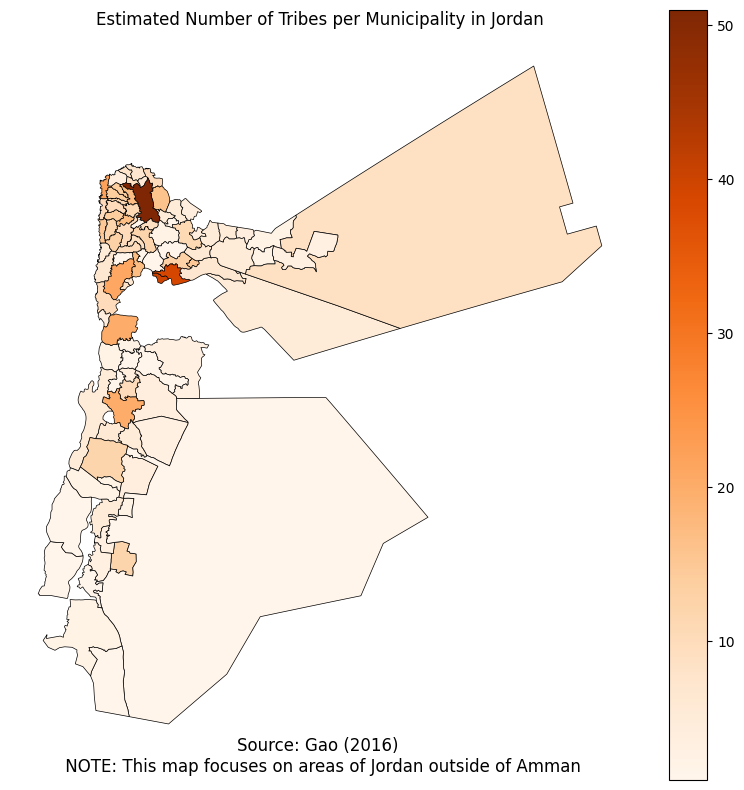

As changes in climate intensify the challenges of water scarcity throughout the world, researchers must begin to examine the role that resource management strategies play in determining communities' access to water. In the early 2000s, Jordan established a number of Water User Associations (WUAs) in the Jordan Valley intending to provide farmers with more decision-making power over how water was distributed throughout their community. Each of these bodies is comprised of community representatives and holds authority over the distribution of water and the enforcement of anti-water theft regulations for all branches sprouting out of a designated water pumping station. This is in contrast to areas without WUAs, where the Jordan Valley Authority controls distribution and regulation enforcement at all levels.
WUAs represent a case of administrative decentralization wherein the central government created local bodies to which it devolved certain obligations. As previous literature has found inconclusive results about the effects of such decentralization measures, I ask what explains variation in the success of these institutions by answering two key questions. First, I ask whether these institutions had any effect at all. I do this by examining a variety of crop growth metrics at various points along each canal branch to determine when water is diverted or rerouted. Second, I pull from canonical literature on diversity and public goods provision to explain why would observe more effective decentralization processes in some areas but not in others. Because tribal linkages can often facilitate patronage or clientelist relations, I use a novel dataset of tribal affiliations at the local level.
Since elections were reintroduced to Jordan in the 1990s, there have been a series of electoral reforms governing attributes of electoral districts themselves such as their size and geographic boundaries in addition to changes to the electoral process itself. One of the most significant changes was the switch to a single-non-transferrable vote (SNTV) sytem, or the so-called "one man one vote" system in which voters in multimember districts could only select one candidate on their ballots. This reform was deeply unpopular with the Islamic Action Front (IAF), Jordan's main opposition party, which boycotted several parliamentary elections in response to the new rules. In addition, it was criticized by various commentators as a system that would discourage the formation of political parties and allow tribal elites to capture these electoral districts through existing networks of patronage.